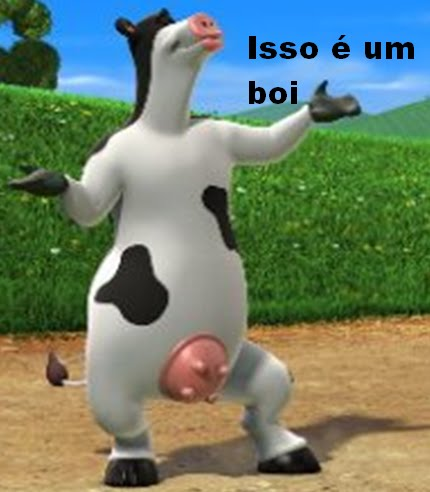

O touro Otis gosta de cantar e tocar como todos os outros animais do celeiro, quando o agricultor está fora. No entanto, o bovino despreocupado deve logo encontrar coragem para ser um líder quando, inesperadamente, ele se encontra em uma posição de grande responsabilidade.